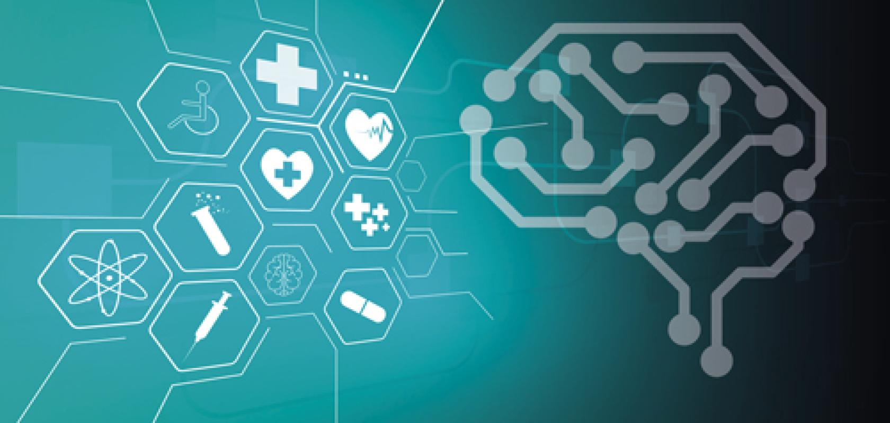

 Application of computer techniques in medicine
Abstract
Computers are being increasingly used in medical profession. There are different levels of interface of medicine and computer technology. This article has been written to create computer awareness in medical professionals and impress upon them the necessity and benefits of various computer techniques in medicine, health and hospital services.
Computer Techniques in Medicine
The application of computer techniques in various fields of medicine is briefly discussed below :
Hospital information system
Medical informatics is a rapidly growing discipline. It seeks to organize and manage information in support of patient care, biomedical research and education through the aid of computer and information networks [2]. A computerized hospital information system can establish consistent standards in the transmission and storage of data and continuously monitor all transactions. It provides easy access to valuable patient care information. The physicians can have direct access to all the information of his/her patient through the use of computer. A hospital information system generally covers areas like registration, admission/transfer/discharge, billing, medical record, index, wards, operation theater scheduling, stores/inventory, pharmacy, diet, CSSD, bio-medical maintenance, payroll, accounts, etc.
To date, several software vendors have developed hospital systems relating to managing hospitals [3]. Generally hospital administrators prefer to buy ready made package and customize the same to suit their needs.
Data Analysis in Medicine
In medical research large number of data is collected. This data is to be compiled, analyzed and interpreted. For this purpose, certain statistical methods are to be applied, these include calculation of standard deviation, standard error, application of tests of statistical significance like Z Test, unpaired and paired t test and chi-square test. Statistical methods are time consuming. With the help of computer, large number of statistical calculations can be performed in a very short time.
Several good quality statistical packages are available, which allow the use of many more methods than is practical using traditional paper calculations [4]. These statistical packages include the following :
1-The biomedical computer package (BMD) : This was the first package developed and provides a standard set of advanced statistical programs.
2-Statistical package for the social sciences (SPSS): It is used for wide range of medical problems. Many statistical options are available in SPSS varying from simple statistics to multivariant analysis.
3-Genstat: This is a powerful package with special emphasis on analysis of variance.
Info : This package is developed by WHO for epidemiological studies. This package has word processing, data analysis and graphical abilities. Questionnaire can be made directly by text editor. Data analysis is very simple and serves the need of most of investigators. The program is made available by WHO and CDC (Centre for Disease Control) and are not copyrighted. Making copies for others is permitted and encouraged.